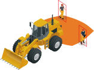

特殊車両用
安全AIカメラシステム
接続災害の予防
メディア紹介
主な特長
詳しい内容を見る
ディープラーニング(AI)を応用したICチップを搭載し、所定の範囲に接近する人と、車両など見分けて危険が迫ると画面警告と警告音でお知らせします。
国土交通省が定める協定規則第151号の側方衝突警告装置(BSIS)と同等の能力を有しています。
3段階（緑・黄・赤）の警告灯と2段階の警告音により、危険度に応じて適切にドライバーにお知らせします。
ナビゲーション画面やモニター画面に2分割の見やすい表示と、 画面内の警告表示で衝突の危険度を表示します。
車両総重量８トン以上の大型トラックや大型バスなどに学習を最適化しており、 車両の左側の直近を後方から通過する人や自転車、バイクなど、人や他の車両の接近により危険が迫ると警告します。
車両が40㎞/h以下の場合に警告を行い、それよりも高い速度はもしくは0km/hのときはモニターとLEDの警告表示のみとなります。
赤外線ライトをカメラ本体に内蔵していますので、15ルクスまでの暗闇でも検知動作ができます。
WDR (Wide Dynamic Range)機能により明暗が素早く変化しても、画面が白とびしたり黒つぶれすることの少ない映像を見ることができます。
高画質130万画素のCMOSイメージセンサーを搭載し様々な状況でもクリアな映像を見ることができます。
映像出力はコンポジット(NTSC)ですので、ナビゲーションユニットなどの映像入力端子に接続できます。また、AHD(720p)での出力も可能です。
大型トラックの左側ミラーに簡単に装着でき、自在に調整が可能なブラケットにより強固に取り付けが可能です。
動作電圧は特殊車両や24Vと12V車に対応しています。
AI搭載カメラだから
障害物から
人を見分けて検知
旋回・走行中でも障害物から人だけを見分けて危険なときだけ検知します。静止・歩行・しゃがみ込み・台車を押している人などを見分けて、トラッキングし LED警告灯と警告音でお知らせします。
フォークリフトや
建機に最適化
9パターンの検知範囲から建機の高さやサイズなど、現場の状況に合わせて選択できます。左側・右側・後方カメラなど、複数のカメラでオペレーターの安全運転をサポートします。
左右180°の
広い検知範囲
最適化されたカメラとレンズにより左右180°の視野角を確保し、広い検知範囲を網羅。 最大12台のカメラを連携でき、確実に死角をなくし、オペレーターの不安を取り除きます。
超低コスト
他社製カメラに比べ大幅なコストダウンが可能。カメラとチップの一体型であるEmbedded AI （組み込み型ＡＩ）により、機器構成がシンプルになりミリ波レーダーなどの旧来技術に比べて対象物（歩行者・バイク・自動車など）の違いを見分け、高度に危険度の判定が可能となっています。
簡単取付
車両からの電源供給のみで稼働するため、通常の整備レベルで取付と調整が可能です。頑丈かつ自在なボールマウント・ブラケットにより簡単に死角をカバーできます。
静止・歩行・しゃがみ込み※1…
人だけを検知！
Embedded AIで、検知範囲内の人だけを検知します。モニター上で検知対象をトラッキングし、危険度に応じてLED警告灯と警告音でお知らせすることで、オペレーターの安全操作をサポートします。


車両・現場に合わせれる
９パターンの検知範囲
特殊車両の種類や取り付け高さに合わせて検知範囲を選択できます。
検知範囲の切り替えは簡単な操作で行え、各カメラ毎に検知範囲を設定できます。
取り付けるだけで
検知開始！
①カメラを死角に装着
②現場に合う検知範囲選択
③完了！検知開始！

脱着式だから
次の現場でもOK
オプションでマグネットタイプのマウントもランナップされており、現場や車両が変わっても、脱着可能なため、柔軟にご使用いただけます。
さらに、ボールマウントブラケットで
柔軟に角度調整
❶ボールマウントブラケット
❷ネジ止め、マグネット２種類から選べる
ギャラリー


基本構成

仕様
| 電源 | DC 12V もしくは DC 24V |
| (10.8V〜28.8V 使用可能) | |
| アース方式 | マイナスアース方式 |
| 最大消費電流 | 2.5A 以下 |
| 出力映像 | 正像/鏡像 切替方式 |
| 撮像素子 | 1/3インチ |
| カラーCMOSイメージセンサー | |
| 画素数 | 約130万画素 |
| 画角 | 水平約180°/垂直約135° |
| 最低照度 | 約0.1lx以上 |
| S/N | 約130dB（標準照度にて） |
| 同期方式 | 内部同期 |
| 映像出力 | NTSC方式準拠 1Vp-p（75Ω） |
| AHD方式 | |
| 解像度 | 約350TV本 |
| AHD 1280x720 30Hz | |
| 音量 | 約90dB/70dB |
| 音色 | 200-20kHz |
| 警告LED | 赤 |
| 検知照度範囲 | 約60lx以上 |
| 動作温度範囲 | -30〜65℃ |
| 保存温度範囲 | -40〜75℃ |
| 防水構造 | IP68（カメラ本体） |
| ※1 JIS A 8338（附属吾B）準拠 | |
価格・お問い合わせ
価格はすべてオープンプライスです。
詳しくは弊社のメールフォームもしくはお近くの整備業者様へお問い合わせください。
ACUC-0004 次世代特殊車両用安全AIカメラシステムセット
JAN：4580059640236
ACMU-0004 処理ユニット
JAN：4580059640243
APCC-0004 1m延長ケーブル（6P丸形）
JAN：4580059640250
関連商品
注釈
※１：80cm以上